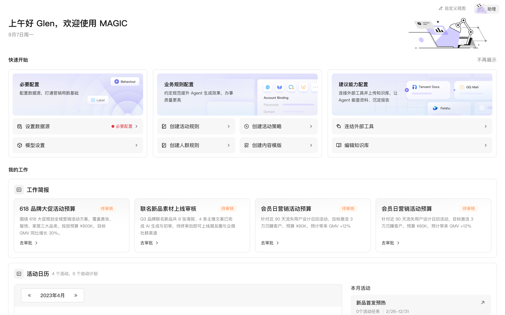

腾讯企点营销云
MAGIC AI
从功能驱动到意图驱动，探索 Agent-first 的交互体验范式


从功能驱动到意图驱动，探索 Agent-first 的交互体验范式

01 产品与体验 · 结果先行
先从一场秋冬换季沉默会员召回活动，看看 Agent 如何把增长目标变成可执行方案。
表达目标 → Agent 组织 → 人确认 → 交付可执行方案
01 产品与体验 · 产品结构
上层是会协作的 AI 营销团队，中层是懂企业的增长操作系统，下层是能够真正执行的营销云底座。

02 发现与定义 · 现状旅程
以会员运营做一场大促为例，看同一份业务目标如何在整条链路里损耗。

02 发现与定义 · 问题定义
用户从经营目标发起任务，Agent 说明自己理解的目标与约束，人在执行前补充、修正并确认。
明确对象、规则与预期结果
理解有依据，关键步骤由人确认
方案可修改、可执行，产出回到企业资产
03 体验策略 · 介入方式
依据发起者、意图清晰度、任务复杂度与出错代价，选择内嵌式 AI、协作式 Copilot（AI 协作助手）或 Multi-Agent（多智能体协作）。
03 体验策略 · 内嵌式 AI
工作台首页把人群挖掘、活动复盘和运营体检收成可核对洞察，给出依据和下一步；是否行动仍由运营决定。
AI 主动更新运营洞察，并将异常连接到下一步动作。
03 体验策略 · 协作式 Copilot
在策略库中上传并提取材料，标出冲突与适用范围；确认后才写入可复用规则，供后续任务调用。
上传材料 → AI 提炼与标冲突 → 确认后写入规则。
03 体验策略 · 智能体式 Multi-Agent
主 Agent 守住目标，专业 Agent 分工执行。过程收起，待确认外露；失败留在流程内，改条件即可重试。
Agent 工作台完成活动策划。过程收起，待确认外露，失败留在流程内。
04 基础体验 · 主路径
无论 AI 如何介入，用户都需要知道能做什么、准备怎么做，以及结果能否核对和使用。
04 基础体验 · 意图可见
04 基础体验 · 过程可介入
04 基础体验 · 结果可用
04 基础体验 · 三类组件
将任务表达、协作确认与结构化产物收敛为三类组件，统一不同 Agent 的状态、确认与结果呈现。

05 验证与总结 · 交付反馈
交付反馈推动规则配置 Copilot、三栏任务空间与结构化产物的迭代，再在后续任务中验证体验是否有效。
05 验证与总结 · 设计协作
AI 辅助资料归纳、方案探索与规范检查，团队负责业务判断和设计取舍，有效方法沉淀供后续项目复用。
05 验证与总结
以企业上下文和协作边界为基础，持续探索 Agent-first 的使用方式。
05 验证与总结
让 AI 在合适的任务中承接复杂过程，让用户专注于判断和决策。
2026 年营销云整体业务签约金额增速 +35%，已签约订阅制 KA 客户 160+ 家。
持续关注 KA 客户的实际采用、有效任务完成与后续复用。
演示场景中的品牌、人物与样例数据均已替换或使用示例；产品界面保留真实设计形态。商业数据统计范围为营销云产品线。